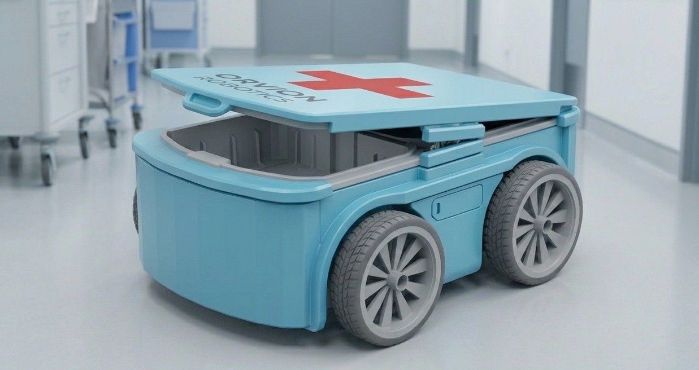
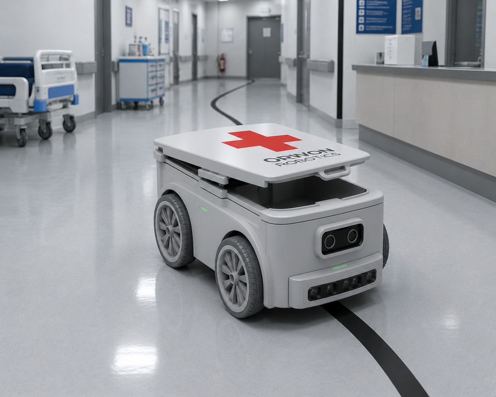

El rover que optimiza tu hospital
Bit-Track Rover es un robot autónomo de logística interna que sigue líneas guía para transportar insumos, medicamentos y materiales dentro de tu institución — sin errores, sin demoras.
obtener ahoraBit-Track Rover es un robot autónomo de logística interna que sigue líneas guía para transportar insumos, medicamentos y materiales dentro de tu institución — sin errores, sin demoras.
obtener ahora
Bit-Track Rover sigue una línea guía para transportar insumos, medicamentos y materiales dentro del hospital de forma autónoma, sin errores y sin interrumpir al personal de salud. Desde nuestra app podés solicitar una entrega, elegir el origen y destino, y seguir el rover en tiempo real. Con detección de obstáculos, compartimiento seguro y operación 24/7, Bit-Track garantiza trazabilidad completa en cada traslado — para que tu equipo se enfoque en lo que realmente importa: los pacientes.

Incorporar Bit-Track Rover en tu institución reduce significativamente el tiempo que el personal de salud dedica a traslados internos, devolviéndole ese tiempo a la atención al paciente. Al eliminar errores de entrega y garantizar trazabilidad completa en cada traslado, mejora la seguridad operativa del hospital. Su instalación es simple — solo adhesivo en el piso — sin obras ni interrupciones. Con retorno de inversión en menos de 18 meses y operación continua las 24 horas, Bit-Track no es un gasto, es una decisión estratégica.

El personal coloca el material a transportar — medicamentos, muestras, insumos o documentos — en el compartimiento seguro del rover. Luego, desde la app, solicita el envío indicando el destino dentro del hospital. Bit-Track Rover recibe la orden, sigue automáticamente la línea guía en el piso y llega al punto indicado sin intervención humana. Al llegar, notifica al destinatario para que retire el material. Simple, rápido y sin margen de error.

El personal solicita una entrega desde cualquier terminal o tablet del hospital.
El rover se posiciona en el punto de origen y el personal coloca el material de forma segura.
Bit-Track sigue la línea guía de forma autónoma, esquivando obstáculos en tiempo real.
El destinatario recibe una notificación y retira el material. El rover queda listo para la próxima tarea.
Somos un equipo apasionado por la tecnología y la salud. Desarrollamos Bit-Track Rover con el objetivo de optimizar la logística interna de los hospitales, reduciendo tiempos y mejorando la atención al paciente.